Dein Ziel
Am Ende dieses Kurses kannst du:
- mit dem Metronom einen gleichmäßigen Puls halten,
- einen 4/4-Takt zählen,
- ganze, halbe und Viertelnoten sowie die zugehörigen Pausen lesen, schreiben, nach Gehör erkennen und klatschen, während dein Fuß den gleichmäßigen Puls hält.
Lektion 01 / Musik als Geschichte
Musik als Geschichte
Die menschliche Existenz dreht sich um Geschichten:
Wir erzählen, was geschehen ist, um zu verstehen, wer wir sind.
Betrachte dieses Bild und erzähle daraus eine Geschichte.
Hast du dir eine ausgedacht?
Glückwunsch: Du hast gerade begonnen, Musik zu machen.
Unsere Natur führt dazu, dass Ereignisse in Worten, zeitlich geordnet werden.
Dann lass dir Zeit und schließe die Augen.
Lektion 02 / Zeit & Puls
Musik findet in der Zeit statt
Musik: sequenziellEreignisse entfalten sich nacheinander in der Zeit.
Bild: simultanDie visuellen Elemente sind gleichzeitig vorhanden und können grundsätzlich auf einmal erfasst werden.
Anders als in einem Bild, in welchem alle Ereignisse sofort sichtbar sind, entfalten sich Ereignisse in der Musik nacheinander. Klänge beginnen, dauern eine bestimmte Zeit und enden.
Rhythmus gestaltet Zeit
Für Rhythmus interessiert uns zunächst nicht, wie hoch ein Ton ist, sondern wann etwas passiert und wie lange es dauert.
Der Puls
Ein gleichmäßiger Puls, also gleichmäßige Abstände, erlauben uns einen zeitlichen Bezugspunkt zu wahren, welcher als Zentrum für weitere Ereignisse funktioniert. Um dieses Zentrum herum können sich weitere Ereignisse entfalten.
Schaffst du es, genau dann zu klatschen, wenn die nächste Zahl auftaucht?
Die Geschwindigkeit (Tempo, BPM)
Eine Geschichte muss sich an der Wahrnehmung des Menschen orientieren, um Aufmerksamkeit zu binden und verstanden zu werden. Aus dem selben Grund muss die Geschwindigkeit einer musikalischen Geschichte an den Menschen angepasst sein.
Ist sie zu langsam, kann der Mensch denken, dass sich nichts verändert.
Ist sie zu schnell, kann er die Ereignisse nicht mehr auseinanderhalten.
Ist sie zu unregelmäßig, kann der Mensch, abgesehen von der Zufälligkeit, kein Muster erkennen.
Inneres Zeitgefühl
Das Metronom gibt einen gleichmäßigen Puls vor.
Wir üben, diesen Puls bewusst wahrzunehmen und mit einer gleichmäßigen Bewegung zu markieren.
Das stärkt unser Zeitgefühl.
Wir verbinden den musikalischen Puls mit einer Körperbewegung.
Es ist üblich, dafür einen Fuß zu nutzen, doch jedes Körperteil und auch mehrere gleichzeitig können den Puls markieren.
Wir machen den musikalischen Puls körperlich spürbar.
03 / Notation & Takt
Rhythmische Notation
In der westlichen Musiknotation wird die Dauer von Tönen durch verschiedene Notenwerte dargestellt.
Schläge werden zu Takten gruppiert
Damit wir nicht endlos weiterzählen, fassen wir eine bestimmte Anzahl von Schlägen zu wiederkehrenden Gruppen zusammen. Eine solche Gruppe heißt Takt.

Der 4/4-Takt
Die häufigste Gruppierung besteht aus vier Schlägen:
- 4
- Wie viele Schläge gehören zu einem Takt? Vier Schläge.
- /4
- Welcher Notenwert dient als Zählzeit? Die Viertelnote.

04 / Die Notenwerte
Jetzt erst kommen die Notenwerte
In der westlichen Musiknotation verwenden wir verschiedene Notenwerte, um die Dauer eines Tons darzustellen.
Im 4/4-Takt lernen wir zunächst ganze, halbe und Viertelnoten kennen.
Die ganze Note
Die ganze Note dauert 4 Schläge. Man braucht also nur eine einzige ganze Note, um einen 4/4-Takt zu füllen.
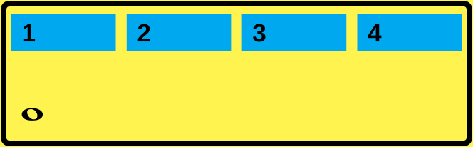
Die halbe Note
Die halbe Note dauert 2 Schläge, also füllt sie in einem 4/4-Takt den halben Takt. Man braucht also zwei halbe Noten, um einen Takt zu füllen.
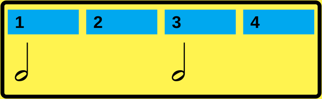
Die Viertelnote
Die Viertelnote dauert 1 Schlag, also füllt sie in einem 4/4-Takt ein Viertel des Taktes. Man braucht also vier davon, um einen 4/4-Takt zu füllen.

05 / Die Pausenzeichen
Für Stille brauchen wir Pausenzeichen
Auch Stille nimmt Zeit ein. Deshalb gibt es zu jedem Notenwert eine entsprechende Pause.
Tippe auf eine Abbildung, um sie zu vergrößern. Die Grafiken bleiben auch beim Zoomen scharf.
Ganze Note & ganze Pause 4 Schläge

Halbe Note & halbe Pause 2 Schläge
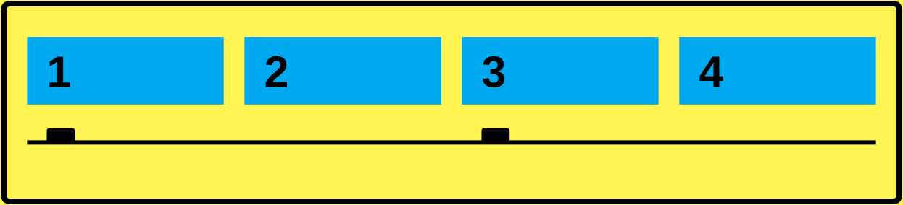
Viertelnote & Viertelpause 1 Schlag
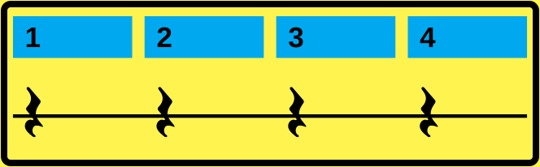
Du hast Puls, Takt, Notenwerte und Pausenzeichen kennengelernt. Kehre zu einem Abschnitt zurück, wenn du etwas noch einmal nachlesen möchtest.
Rhythmus Kurs 1 / Kapitel 02
Die Notenwerte.
Dein Fuß hält den Puls. Jetzt kommen die Hände dazu: Lies, klatsche, höre und schreibe ganze, halbe und Viertelnoten.
Kapitel 2 als PDF herunterladen ↓Zum Einstieg
Der Puls bleibt. Die Notenwerte wechseln.
Nachdem du im ersten Kapitel gelernt hast, einen gleichmäßigen Puls zu halten, fügen wir nun unterschiedliche Notenwerte hinzu.
Wenn wir klatschen, können wir Notenlängen nicht genau darstellen, da wir nur ein kurzes Geräusch machen. Daher wird danach gehalten. Jede Note beschreibt, wie lange ein Ton dauert.
Der Puls deines Fußes bleibt dabei immer gleich.
Der Fuß trägt weiterhin die Zeit.
Deine Hände klatschen die Notenwerte und machen ihre Dauer spürbar.
Lernziele
Nach diesem Kapitel kannst du:
- Ganze, halbe und Viertelnoten erkennen.
- Die Dauer jeder Note erklären.
- Notenwerte im 4/4-Takt lesen.
- Notenwerte mit Fuß, Stimme und Klatschen korrekt ausführen.
- Einfache Rhythmen ohne Pausen vom Blatt lesen.
- Vollständige 4/4-Takte mit Notenwerten schreiben.
Aufbau der Lektionen
Jede Lektion folgt dem gleichen Ablauf:
- Erklärung
- Körperübung
- Rhythm Radio
- Leseübung
- Höraufgabe
Lektion 01 / Ganze Note
Vier Schläge. Eine Note.
1. Erklärung
Eine ganze Note dauert vier Schläge.
2. Körperübung
Stelle das Metronom auf 50 BPM. Tritt mit dem Fuß auf jeden Schlag. Zähle laut:
Klatsche dann auf die 1 und halte danach die Schläge 2, 3 und 4. Es hilft, wenn du die Schläge 2, 3 und 4 durch eine leichte Bewegung deiner haltenden Hände markierst.
3. Mitspielübung
Höre den Einzähler 1, 2, 3, 4. Danach klingt eine gehaltene ganze Note, während das Metronom weiterläuft. Im nächsten Takt hörst du nur das Metronom; anschließend wiederholt sich das Muster.
Stampfe mit dem Fuß die Schläge 1, 2, 3, 4. Zähle laut 1, 2, 3, 4. Klatsche auf die 1 und halte auch die Schläge 2, 3 und 4, wie in der Körperübung zuvor.
Achte dabei auf das Metronom, um dein inneres Zeitgefühl zu schärfen. Versuche nicht, auf das Metronom zu reagieren oder es vorauszusehen, sondern dein Stampfen immer gleichmäßiger zu machen.
4. Leseübung
Lies die Takte. Stampfe den Puls. Zähle laut. Klatsche den Rhythmus.
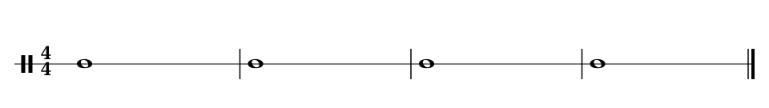
Lektion 02 / Halbe Note
Zwei Schläge pro Note.
1. Erklärung
Eine halbe Note dauert zwei Schläge. Im 4/4-Takt passen zwei halbe Noten in einen Takt.
2. Körperübung
Dein Fuß markiert 1, 2, 3, 4. Klatsche auf 1 und 3.
3. Mitspielübung
Höre den Einzähler und folge danach dem gleichmäßigen Puls. Klatsche auf 1 und 3 und halte auf 2 und 4.
Stampfe mit dem Fuß die Schläge 1, 2, 3, 4. Zähle laut 1, 2, 3, 4. Klatsche auf die 1 und halte auch Schlag 2. Klatsche dann Schlag 3 und halte auch Schlag 4.
Achte dabei auf das Metronom, um dein inneres Zeitgefühl zu schärfen. Versuche nicht, auf das Metronom zu reagieren oder es vorauszusehen, sondern dein Stampfen immer gleichmäßiger zu machen.
4. Leseübung
THE RHYTHMINATOR
Noch keine Takte übertragen. Erstelle in Aufgabe 4 eine Zwei-Takt-Gruppe und werte sie als richtig aus.
5. Höraufgaben 1–3
Nutze nun die drei Höraufgaben für Lektion 2, um dein Gehör zu verbessern.
Starte das Rhythm Radio und stampfe mit dem Fuß das Metronom mit. Zähle währenddessen die erklingenden Noten und deren Dauer.
Schreibe auf einem Blatt die Noten auf, die du hörst und vergleiche dann mit den Lösungen.

Höraufgabe 1
Lösung 1 anzeigen

Höraufgabe 2
Lösung 2 anzeigen
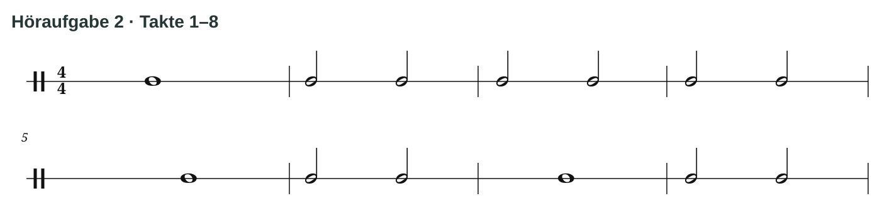
Höraufgabe 3
Lösung 3 anzeigen

Lektion 03 / Viertelnote
Ein Schlag pro Note.
1. Erklärung
Eine Viertelnote dauert einen Schlag.
2. Körperübung
Dein Fuß markiert 1, 2, 3, 4. Klatsche auf jeden Schlag.
3. Mitspiel-MP3
Nutze die Übung „Rhythmus Kurs 1 Kapitel 2 Lektion 3 Mitspielübung“. Es wird auf jeden Schlag eine Viertelnote geklatscht. Achte weiterhin darauf, dass dein Fuß sich gleichmäßig bewegt.
4. Leseübung
Öffne die Übung „Rhythmus Kurs 1 Kapitel 2 Lektion 3 Leseübung“ und mache dich mit den Takten vertraut.
Spiele dann wie zuvor schon die Takte, indem du mit dem Fuß stampfst und dabei klatschst.

5. Höraufgaben 1–3
Für diese Lektion gibt es drei Höraufgaben. Es kommen ganze, halbe und Viertelnoten vor.
Höre die drei Aufgaben nacheinander im Rhythm Radio an. Notiere die Takte auf Papier und vergleiche deine Lösung mit dem Lösungsblatt, das das Radio ausgibt.
Tipp: Es ist besser, nur eine Aufgabe oder sogar nur einen Takt mit höchster Hingabe und Konzentration zu bearbeiten, als alle Aufgaben auf einmal zu machen und nicht bei der Sache zu sein.
Höraufgabe 1
Lösung 1 anzeigen

Höraufgabe 2
Lösung 2 anzeigen
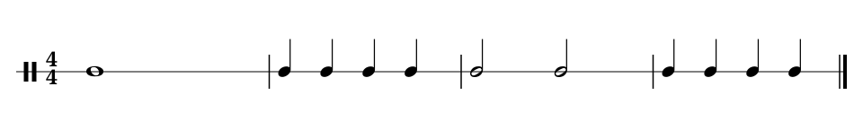
Höraufgabe 3
Lösung 3 anzeigen

Zum Abschluss
Reflexion
Das nehme ich mit:
Hake ab
Dein nächster Schritt
Aus Noten wird Rhythmus.
Nimm dir für jede Lektion so viel Zeit, wie du brauchst.
Weiter zu Kapitel 3 Noch einmal üben ↑← Zurück zu Kapitel 1Rhythmus Kurs 1 / Kapitel 03
Raum für Pausen.
Auch Stille gehört zum Rhythmus. Dein Fuß trägt den Puls weiter – du lernst, Pausen zu lesen, zu spüren und genau einzuhalten.
Kapitel 3 als PDF herunterladen ↓Zum Einstieg
Die zweite Hälfte des Rhythmus.
Im letzten Kapitel hast du gelernt, dass Noten unterschiedlich lange dauern können. Jetzt lernst du die zweite Hälfte des Rhythmus: Pausen.
Eine Pause bedeutet nicht, dass der Puls stoppt. Sie bedeutet lediglich, dass kein Ton erklingt.

Dein Fuß bewegt sich trotzdem weiter.
Du zählst weiter.
Nur das Klatschen setzt aus.
Lernziele
Nach diesem Kapitel kannst du:
- Ganze, halbe und Viertelpausen erkennen.
- Die Dauer jeder Pause erklären.
- Pausen sicher lesen.
- Rhythmen mit Noten und Pausen korrekt ausführen.
- Vollständige 4/4-Takte mit Noten und Pausen schreiben.
Aufbau jeder Lektion
Jede Lektion folgt dem gleichen Ablauf:
- Erklärung
- Körperübung, wenn angebracht
- Mitspiel-MP3, wenn angebracht
- Leseübung
- Höraufgabe
Audiodateien öffnen sich bei Google Drive in einem neuen Tab. Öffne die Lösungen erst, nachdem du selbst geübt hast.
Weiter zu Lektion 1 ↓Lektion 01 / Ganze Pause
Vier Schläge Stille.
1. Erklärung
Eine ganze Pause dauert vier Schläge. Während dieser Zeit wird nicht geklatscht.
2. Körperübung
Dein Fuß tritt auf jeden Schlag. Zähle:
1 – 2 – 3 – 4
Wir klatschen nicht, aber halten dafür die ganze Pause und spüren diese.
3. Leseübung
Rhythmen lesen. Zählen. Nur die Noten klatschen. Fühle die Pausen, indem du sie hältst.
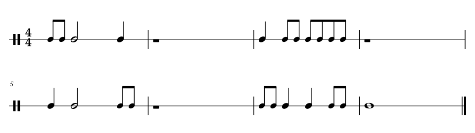
Lösung zur Leseübung anzeigen
4. Höraufgaben
Es wird ein Takt durch das Metronom eingezählt. Dann beginnt die Höraufgabe. Notiere die Noten und Pausen, die du hörst, und kontrolliere dein Ergebnis mit dem Lösungsblatt.
Höraufgabe 1
Lösung 1 anzeigen

Höraufgabe 2
Lösung 2 anzeigen
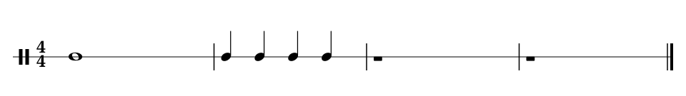
Höraufgabe 3
Lösung 3 anzeigen
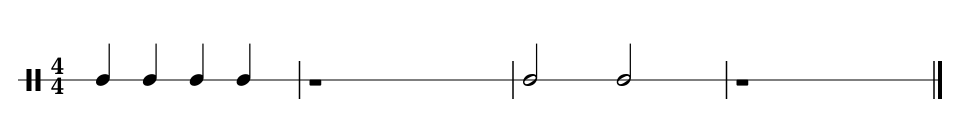
Höraufgabe 4
Lösung 4 anzeigen

Lektion 02 / Halbe Pause
Zwei Schläge Stille.
1. Erklärung
Eine halbe Pause dauert zwei Schläge.
2. Körperübung
Stampfe mit dem Fuß wie in den vorigen Kapiteln. Halte nun jeweils zwei Schläge lang eine aktive Pause. Das bedeutet, du konzentrierst dich darauf, jeweils zwei Schläge Stille zu spüren.
Spüre auch, wo die halbe Pause jeweils beginnt: in diesem Fall auf Schlag 1 und auf Schlag 3.
Stampfe: 1, 2, 3, 4. Klatsche nicht. Spüre:
1 2 | 3 4
3. Mitspiel-MP3
Höre dir die MP3 an und erkenne das Muster. Der Takt wird wiederholt. Sobald du das Muster erkannt hast, spiele mit. Wiederhole die Aufgabe so oft wie nötig, um den Rhythmus entspannt mitstampfen und mitklatschen zu können.
4. Leseübung
Rhythmen lesen und klatschen.

Lösung zur Leseübung anzeigen
5. Höraufgaben
Welche Notation hörst du? Schreibe sie auf und kontrolliere dann mit den Lösungsblättern.
Höraufgabe 1
Lösung 1 anzeigen
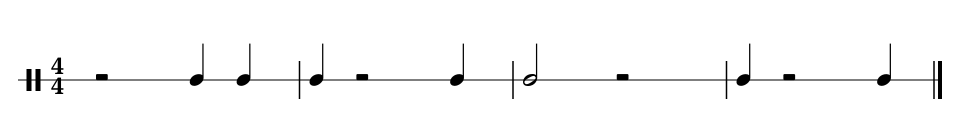
Höraufgabe 2
Lösung 2 anzeigen
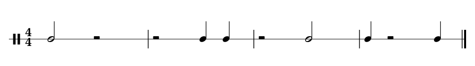
Höraufgabe 3
Lösung 3 anzeigen

Lektion 03 / Viertelpause
Ein Schlag Stille.
1. Erklärung
Eine Viertelpause dauert einen Schlag. Der Puls läuft weiter.
2. Mitspiel-MP3
Höre dir die MP3-Dateien an und erkenne das Muster. Der Takt wird wiederholt. Sobald du das Muster erkannt hast, spiele mit. Wiederhole die Aufgabe so oft wie nötig, um den Rhythmus entspannt mitstampfen und mitklatschen zu können.
3. Leseübung
Rhythmen lesen. Klatschen.
Leseübung 1
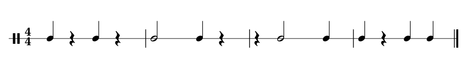
Lösung zur Leseübung 1 anzeigen
Leseübung 2 · Versteckter Songrhythmus · LDDLM
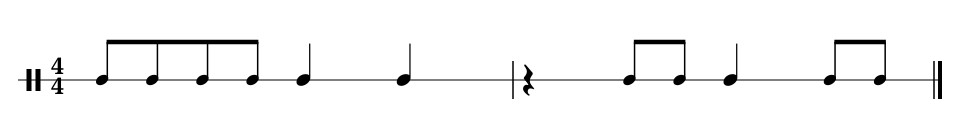
Lösung zur Leseübung 2 anzeigen
4. Höraufgaben
Notiere, was du hörst. Verdecke die Lösung, bis du sie brauchst.
Höraufgabe 1
Lösung 1 anzeigen
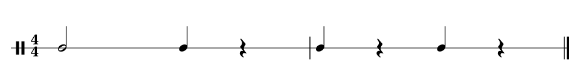
Höraufgabe 2
Lösung 2 anzeigen
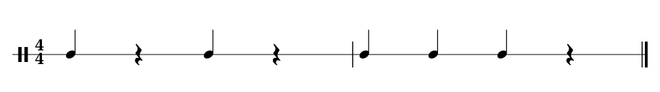
Höraufgabe 3
Lösung 3 anzeigen

Zum Abschluss
Kapitelziel erreicht.
Du kannst jetzt:
Damit beherrschst du alle grundlegenden Rhythmussymbole des 4/4-Takts und bist bereit für komplexere Rhythmen.
Ende von Kapitel 3
Auch die Stille hat ihren Platz.
Dein Fuß trägt den Puls – durch Noten und durch Pausen.
Zum Kursüberblick Noch einmal üben ↑← Zurück zu Kapitel 2